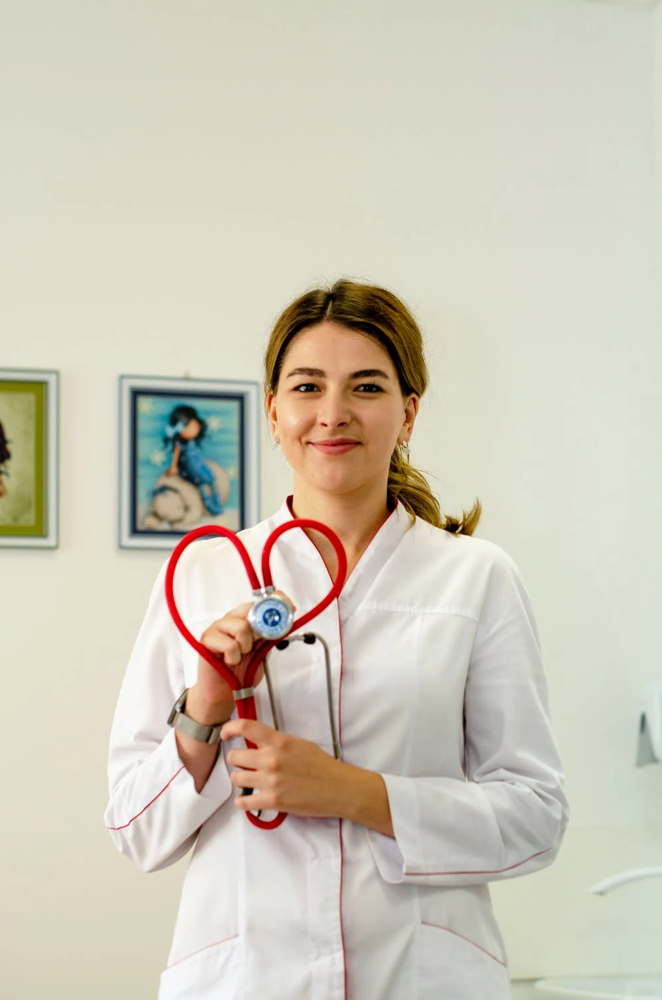

Russel Street Medical opened in 2020 and is located in Melbourne’s CBD at 340 Russel Street
Melbourne, just opposite The Old Melbourne Jail and within walking distance of Melbourne Central
Train Station.
We strive to help all of our patients with a focus on preventative health care, a view to managing
chronic health conditions with a holistic approach, and with access to a wide range of specialist care
providers when needed.
Under partnerships, we are able to offer RMIT students & staff discounted rates.
Consultation
Normal Fee
RMIT Member Fee
Medicare Rebate
Standard
$85.00
$60.50
$39.75
Long or Complex
$130
$91.00
$76.95
Who we Are

Abigale Laurentis completed her medical degree at the University of Queensland in 2013, where she
also obtained a Bachelor of Science in Biomedicine.
Over her training and practice, Abigale has worked in a variety of clinical settings including
specialities at Latrobe Health.
Stephen Hill graduated from Auckland University in New Zealand in 2014, and obtained his
Fellowship from the Royal Australian College of General Practitioners in 2017.
Over his training and practice, Stephen worked in internal medicine at the Royal Children's Hospital
Melbourne before transitioning to General Practice.
Kiyoko Tsu completed her Bachelor of Nursing at the Yong Loo Lin School of Medicine in Singapor e in
2019.
She is an accredited Nurse Immuniser and has worked in various hospitals within metropolitan
Melbourne.